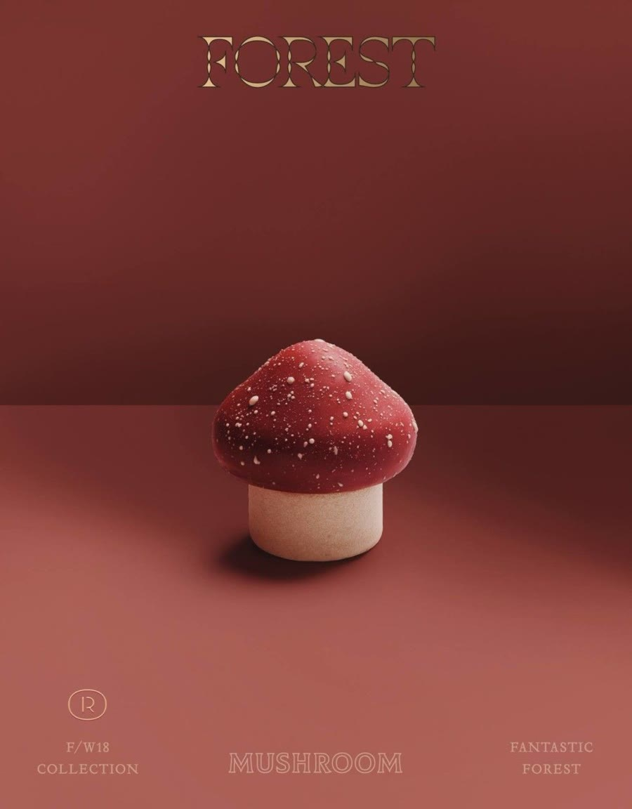
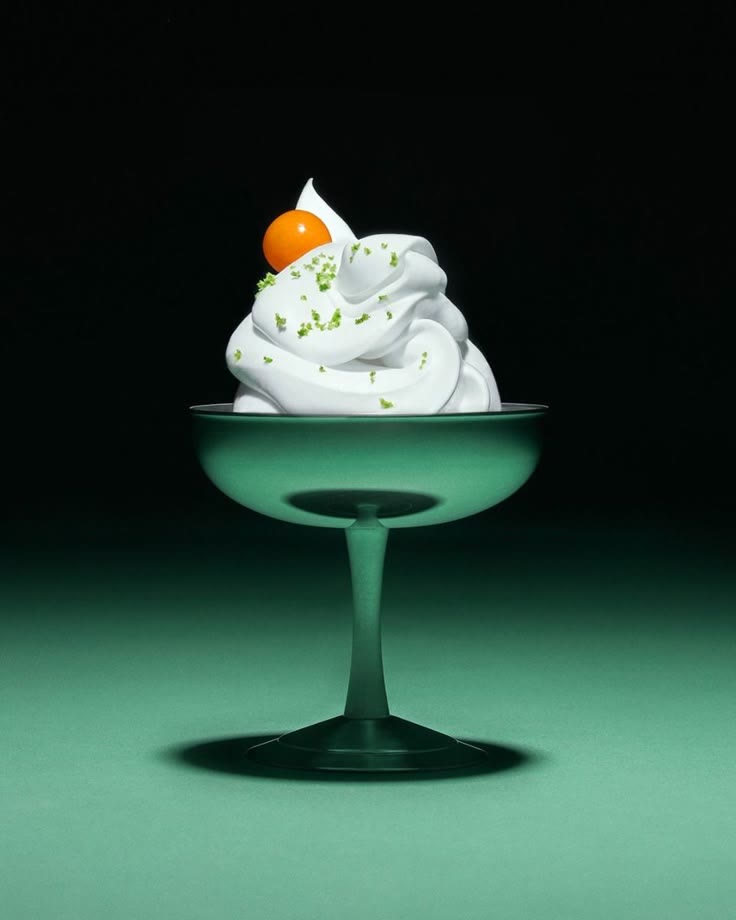
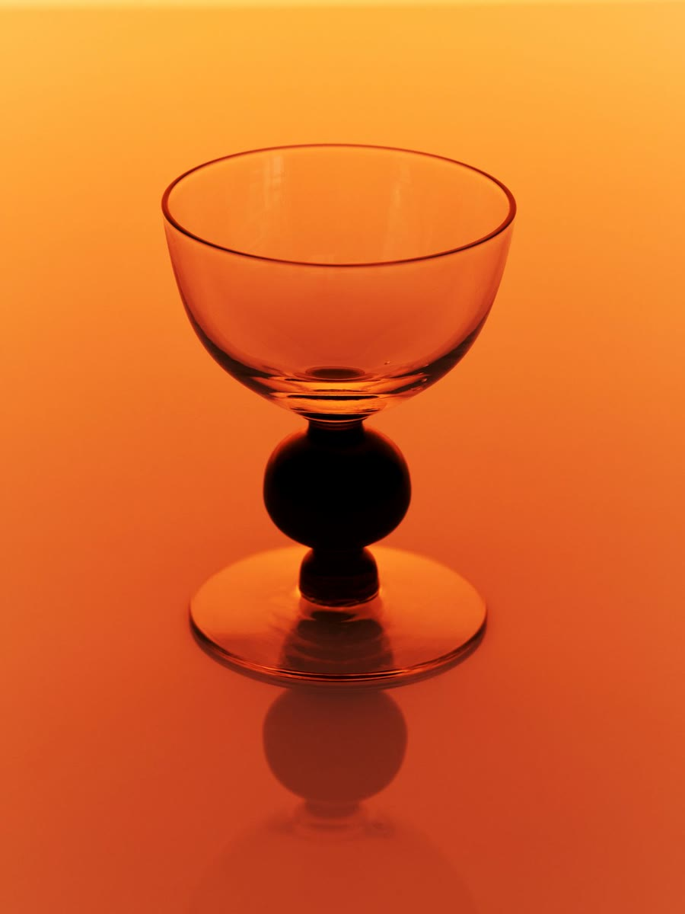
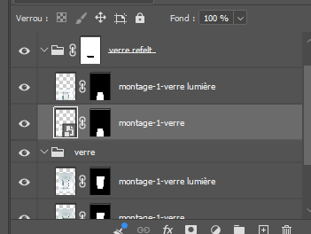
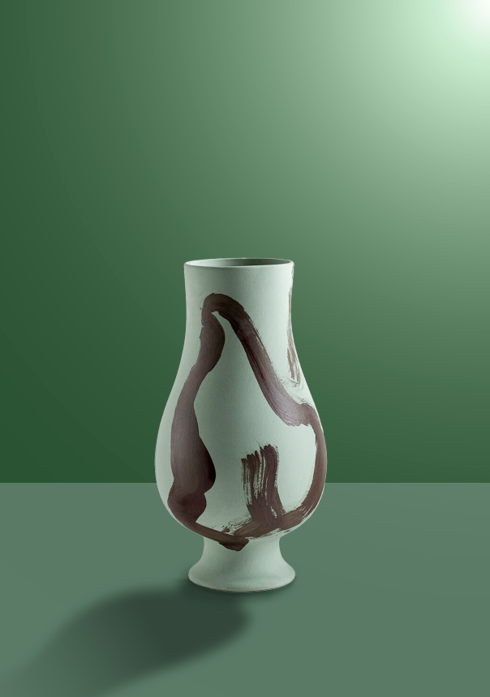
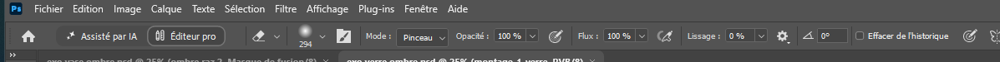
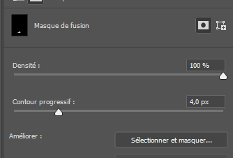
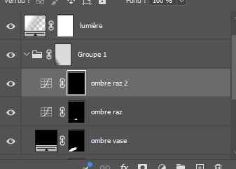
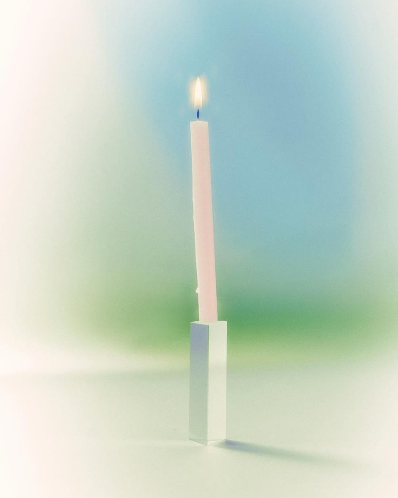
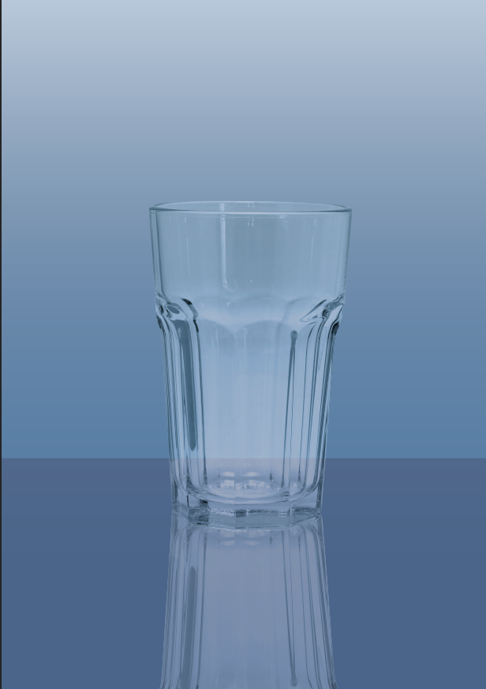

Un montage n'est pas un collage
Un photomontage est une image faite de plusieurs autres : un objet photographié quelque part est détouré, posé dans un décor fabriqué sous Photoshop, et éclairé par la lumière de ce décor.



Le fond, en trois zones
On part d'un document neuf en A4, 300 dpi, Adobe RGB. Le décor de la démonstration est un décor de studio : un mur derrière, une table devant. Chaque zone a son propre calque de couleur unie, jamais un aplat peint directement sur l'image. C'est ce qui permet de revenir sur la teinte du mur dix minutes plus tard, quand l'objet est arrivé et que la couleur ne colle plus.
La limite entre la table et le mur s'arrête proprement : une sélection rectangulaire, puis un masque de fusion. Le calque reste entier, on peut déplacer la limite quand on veut.
Détourer l'objet à la plume
Le contour se construit avec l'outil Plume : peu de points, des courbes tendues, et on referme le tracé. On l'enregistre dans le panneau Tracés : c'est lui qui garantit un contour propre, et il resservira.
Du tracé, on crée une sélection ; de cette sélection, un masque de fusion sur le calque de l'objet. L'image n'est jamais découpée, elle est masquée. Un Alt + clic sur la vignette du masque l'affiche en noir et blanc : les oublis sautent aux yeux.
La sélection automatique ne suffit pas. Elle va plus vite, mais elle laisse des bords approximatifs et des morceaux oubliés, un bout de verre, une ligne de contour. On vérifie le masque en noir et blanc, et on reprend à la plume ce qui doit être net.

1 2Poser l'objet dans le décor
Échelle, position, perspective. Avant tout le reste, on vérifie la ligne de contact : l'objet doit toucher le sol. Un objet qui flotte de deux pixels ne s'intègre jamais, même avec de belles ombres.
L'ombre déjà présente sur la photo de l'objet n'est pas un détail : elle indique d'où vient la lumière. C'est elle qui impose le sens de toutes les ombres qu'on fabrique ensuite.

1 2 3Les deux ombres
Un objet porte deux ombres différentes, et les confondre suffit à rater un montage. L'ombre propre, ou ombre de forme, reste sur l'objet : c'est la partie que la lumière n'atteint pas, du côté opposé à la source. L'ombre portée, ou projetée, tombe sur une autre surface, le sol ou le mur, du même côté que l'ombre propre.
Le sens est lié, sans exception : on ne peut pas avoir l'ombre propre d'un côté de l'objet et l'ombre portée de l'autre. Ce n'est pas une question de goût, c'est physiquement impossible.
Directe. Une source ponctuelle, ou une lumière nue pointée sur l'objet : l'ombre est nette, bien délimitée, courte. C'est le rendu d'un flash ou d'un projecteur. L'ombre propre et l'ombre portée ont alors la même dureté.
Diffuse. La lumière passe dans une boîte à lumière, ou à travers un calque diffusant : les bords se fondent, l'ombre s'étale et s'éclaircit. C'est le rendu de studio le plus courant, et celui qu'on cherche en photomontage.
Indirecte. Le rebond d'un mur ou d'un sol. Elle ne crée pas d'ombre nouvelle : elle débouche les ombres existantes, éclaire largement et prend la couleur de la surface qui la renvoie. C'est elle qui manque aux montages qui paraissent faux.
Et une ombre ne se fait pas en un seul calque
Une ombre crédible est un empilement : une base large et très floue, un noyau plus sombre et plus resserré, puis l'ombre de contact, minuscule et presque noire, collée au pied de l'objet. L'ombre s'éclaircit en s'éloignant, parce que la lumière rebondit tout autour : on n'est jamais dans une pièce entièrement noire.
La recette, dans Photoshop
- Un groupe « Ombres » entre le décor et l'objet.
- Dedans, un calque de réglage Courbes en mode Luminosité : on assombrit sans toucher aux couleurs.
- Le masque est inversé (noir), puis peint en blanc au pinceau là où l'ombre tombe.
- On répète pour chaque niveau, et on floute le bord du masque.
- Un dégradé dans le masque fait s'éteindre l'ombre loin de l'objet.


1 2 3
1 2 3Opaque, translucide, transparent
Trois matières, trois ombres. Opaque : la lumière est bloquée, l'ombre est dense, presque noire au contact. Translucide : la lumière en passe un peu, l'ombre s'allège et prend la couleur de l'objet. Transparente : la lumière traverse et se dévie, le verre la concentre jusqu'à faire un point clair dans l'ombre.
Un verre transparent ne s'intègre pas comme un objet opaque. On passe son calque en mode Produit : le verre assombrit le décor sans le cacher. On duplique ce calque, et on met la copie en Luminosité : elle rend les reflets et les bords clairs. Les deux ensemble, le verre est là.

Une troisième lumière. Le reflet est un cas à part : la lumière n'est pas absorbée par la surface, elle rebondit. C'est de lui qu'on parle à l'étape suivante.
Les reflets
Sur une surface brillante, la lumière n'est pas absorbée : elle rebondit, et l'objet se double d'une image retournée. C'est ce qui fait qu'un verre posé sur une table semble vraiment posé dessus.
La méthode est simple : on duplique l'objet, on le retourne par symétrie verticale, on le place sous lui le long de la ligne de contact, puis on baisse l'opacité, on floute, et on dégrade le masque pour que le reflet s'estompe. Un reflet est toujours plus sombre et plus flou que l'objet, et il se déforme si la surface n'est pas plane, un verre rempli d'eau par exemple.

1 2 3